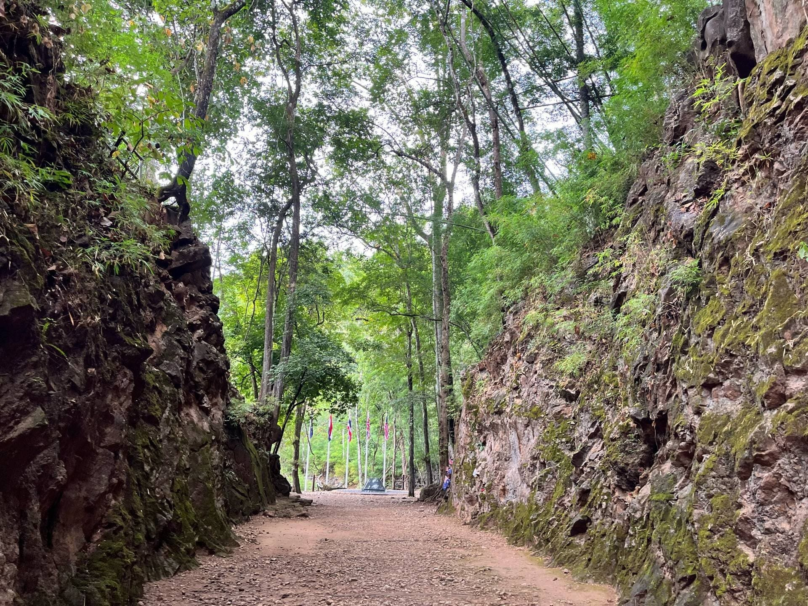

ร้านอาหารชื่อดังบรรยากาศดี ตั้งอยู่ริมแม่น้ำแม่กลองและสวนต้นไม้ร่มรื่น
สวัสดีครับ อยากรู้จักกับผมไหม
เราได้สร้างเว็บไซต์นี้เพื่อทดสอบและทำการศึกษาเกี่ยวกับการเขียนเว็บไซต์
ทำไมต้องอยากรู้จักผม
20%
ความรู้
80
ปีสำหรับการศึกษาอีกในชีวิต
1
มหาวิทยาลัยนามว่ามหาวิทยาลัยเทคโนโลยีราชมงคลกรุงเทพ
2
ความสามารถคือกินและนอน
จุดเด่นของตัวเอง ที่ต้องรู้เกี่ยวกับผม
สวัสดีครับ ผมชื่อ กฤษณะ ศึกษาอยู่ มทร.กรุงเทพ สาขา วิทยาการคอมพิวเตอร์ มีประสบการณ์ทำงานด้าน บริการหลากหลายรูปเเบบ มาประมาณ 15 ปี โดยมีความเชี่ยวชาญในเรื่อง การสื่อสารเเละลำดับการทำงานได้เป็นอย่างดี ผมเป็นคน นิสัยดีๆ มีความรับผิดชอบ ชอบเรียนรู้สิ่งใหม่ๆ ทำงานเป็นทีมได้ดี ขอบคุณที่ให้โอกาสในการแนะนำตัวครับ
+
Years
+
Experiences
+
Faculty
อ.โมริ โคโกโร่
Principal

ภารกิจของผม
ตื่นเช้าผมจะจัดการตัวเอง เพื่อเตรียมตัวไปทำงานในวันที่ไม่มีเรียน เเต่ถ้าหากมีเรียนผมจะเเบ่งเวลาให้กับการทำงานเเละเรียน รวมทั้งทบทวนเนื้อหาที่ได้เรียนมาในเเต่ละวัน
สิ่งที่ผมมองเห็น
ในอนาคตอันไม่ไกลจะต้องมีชีวิตที่ดีขึ้นเรื่อยๆอย่างแน่นอน
ใจกลางความสำคัญ
อดีตเป็นแค่บททดสอบที่มันคอยบ่งบอกว่าชีวิตในวินาทีต่อไปเราควรทำอย่างไรก้าวพลาดได้ซ้ำๆเรื่อยแต่อย่าลืมที่จะเปลี่ยนแปลงการได้มีชีวิตขึ้นมาแล้วก็ควรจะใช้โอกาสตรงนี้ทำทุกอย่างให้มันดูคุ้มค่าและน่าจดจำ
สถานที่ที่ชอบไปเยือน
การจะเรียนรู้ในตัวผมต้องมองเห็นในสิ่งที่ผมเห็นก่อน
- สถานที่ทั้งหมด
- ภูเขา
- ทะเล
- เมือง
ภูเขา

ช่องเขาขาด จ.กาญจนบุรี
ไปทุกปี
เพื่อน2-3คน
เมษา & ตุลา
ช่องเขาขาด หรือ ช่องไฟนรก (อังกฤษ: Hellfire Pass) เป็นส่วนหนึ่งของเส้นทางรถไฟสายไทย-พม่า (ทางรถไฟสายมรณะ) ตลอดเส้นทางรถไฟสายไทย-พม่า มีหลายจุดที่มีเนินหิน ภูเขา หน้าผา หรือหุบเหว ขวางอยู่จึงต้องขุดให้เป็นช่องเพื่อที่รถไฟสามารถวิ่งผ่านไปได้ ซึ่งที่ช่องเขาขาด หรือ ช่องไฟนรก เป็นจุดที่ใหญ่ที่สุดบนเส้นทางนี้
ไปเที่ยวพร้อมกันภูเขา
เขาช่องลม จ.นครนายก
ไปปีละครั้ง
Alone Trip
พฤศจิกา
เขาช่องลม ตั้งอยู่ในเขื่อนขุนด่านปราการชล ที่สายชอบธรรมชาติและถ่ายภาพต้องมา มีลักษณะเป็นต้นน้ำที่ไหลมาจากน้ำตก กลายเป็นช่องน้ำไหลลัดเลาะลงมาเป็นลำธาร ผ่านภูเขาสีเขียวและซอกหินต่างๆ บริเวณเขาช่องลมมีมุมให้ถ่ายรูปสวยหลายจุด ทั้งสีเขียวของทุ่งหญ้า สายน้ำ โดยเฉพาะก้อนหินใหญ่กลางลำธาร เป็นมุมถ่ายภาพยอดฮิต ทำให้เขาช่องลมเป็นที่รู้จักของนักท่องเที่ยว เมื่อเดินเข้าไปประมาณ 1 กิโลเมตร จะพบกับ น้ำตกเขาช่องลม น้ำตกขนาดเล็กที่อยู่ท่ามกลางผืนป่าใหญ่
ไปเที่ยวพร้อมกันภูเขา
ดอยเสมอดาว อุทยานแห่งชาติศรีน่าน
Every Years
Gang Trip
หน้าหนาวเท่านั้น
ดอยเสมอดาว เป็นหนึ่งในภูมิภาคที่อยู่ด้านบนสุดของประเทศไทย มีลักษณะภูมิประเทศส่วนใหญ่ เป็นทิวเขาสลับทับซ้อนมากมาย ทำให้มีทิวทัศน์ที่สวยงามเป็นเอกลักษณ์ ที่เราจะได้เห็น หมอกทะเลสีขาวนุ่มนวลปกคลุมภูเขาที่มีต้นไม้สีเขียวขจี กับแสงขึ้นจากดวงอาทิตย์ที่สาดส่อง ยิ่งถ้ามาในช่วงฤดูหนาวและฤดูฝน บอกเลยว่าเราจะได้สัมผัสหมอก บรรยากาศแบบเต็มที่ เป็นการรับชมบนยอดเขา ดอยเสมอดาว
ไปเที่ยวพร้อมกันภูเขา
ดอยช้าง จ.เชียงราย
Once per Year
Cupple Trip
Winter Only
ดอยช้าง หน้าฝน (เดือนมิถุนายน-กลางตุลาคม) เป็นช่วงที่เหมาะกับการเที่ยวดอยช้างมากที่สุด เพราะเสน่ห์ของดอยช้างจริง ๆแล้วคือการมาดูหมอกละกับทุ่งนาเขียว ๆบนภูเขา ซึ่งช่วงนี้จะมีโอกาสเกิดหมอกได้มากที่สุด โดยเฉพาะช่วงฝนตกหรือหลังฝนตก แต่ข้อเสียช่วงนี้คือต้องคอยดูสภาพอากาศให้ดีด้วย ในช่วงที่มีพายุหมุนเขตร้อนเข้ามาควรหลีกเลี่ยง เพราะอาจจะเกิดฝนตกแบบหูดับตับไหม้หมอกลงจนมองอะไรไม่เห็นเลย ดังนั้นถ้าเป็นไปได้ควรมาช่วงเดือนกันายาน-กลางตุลาคม เนื่องจากฝนจะตกแค่ตอนบ่าย-เย็น เท่านั้น พอตื่นเช้าขึ้นมาอาจมีทะเลหมอกสวย ๆงาม ๆได้ ส่วนแสงจะสวยหรือไม่ต้องลุ้นเอา
ไปเป็นกขค.ทะเล
หาดเจ้าสำราญ จ.เพชรบุรี
2 Years per one time
Alone Trip
หน้าร้อน & หน้าฝน
หาดเจ้าสำราญ ตั้งอยู่ในตำบลหาดเจ้าสำราญ อำเภอเมืองเพชรบุรี จังหวัดเพชรบุรี อยู่ห่างจากตัวเมืองเพชรบุรี ประมาณ 15 กิโลเมตร เป็นชายหาดที่เคยเป็นสถานที่ท่องเที่ยวสำคัญมาแต่สมัยโบราณ มีประวัติเล่ากันมาว่า สมเด็จพระนเรศวรมหาราช เคยเสด็จมาที่นี่ พร้อมด้วยสมเด็จพระเอกาทศรถ ทรงพอพระราชหฤทัยในความงามของหาดนี้มาก ทรงประทับแรมอยู่หลายวัน จนชาวบ้านเรียกหาดนี้ว่า หาดเจ้าสำราญ จากหาดเจ้าสำราญไปทางใต้ประมาณ 7 กิโลเมตร เป็นชายหาดปึกเตียน ซึ่งเป็นสถานที่ท่องเที่ยว อีกแห่งของจังหวัดเพชรบุรี หาดเจ้าสำราญเจริญถึงขีดสุดในสมัยพระบาทสมเด็จพระมงกุฎเกล้าเจ้าอยู่หัว รัชกาลที่ 6
ไปเที่ยวกันมั้ยจ้ะเมือง
ท้องฟ้าจำลองกรุงเทพ (Bangkok Planetarium)
2 Months per Once
Alone Trip
วันอังคาร – วันอาทิตย์ เวลา 09:00 – 16:00 น. (ปิดวันจันทร์และวันหยุดนักขัตฤกษ์)
ท้องฟ้าจำลองกรุงเทพยังคงเปิดให้บริการและมีการจัดแสดงนิทรรศการและภาพยนตร์ภายใต้โดมเป็นประจำ โดยมีการปรับปรุงเนื้อหาและเทคนิคการนำเสนอให้ทันสมัยอยู่เสมอ นอกจากนี้ ยังมีนิทรรศการถาวรเกี่ยวกับดาราศาสตร์และวิทยาศาสตร์อื่นๆ ที่น่าสนใจอีกมากมาย และเป็นสัญลักษณ์แห่งการเรียนรู้ด้านอวกาศและวิทยาศาสตร์ในประเทศไทย และเป็นสถานที่ที่พร้อมจะเปิดประตูสู่จักรวาลอันกว้างใหญ่ให้กับทุกท่านที่มาเยี่ยมชม
ไปเที่ยวพร้อมกันรวมบรรยากาศ
ไปโพสมาหมดแล้วมาชมกันครับ
มิตรภาพ
การท่องเที่ยวแบบธรรมชาติมิตรภาพสามารถให้ประสบการณ์ที่หลากหลายและมีคุณค่า ทั้งด้านสุขภาพกายและใจ รวมถึงการสร้างความสัมพันธ์ที่ดีกับเพื่อนร่วมทางและธรรมชาติ การเดินทางแบบนี้ยังช่วยเปิดโลกทัศน์ สร้างแรงบันดาลใจ และเรียนรู้การปรับตัวให้เข้ากับสภาพแวดล้อมใหม่ๆ ได้อีกด้วย
สิ่งที่ได้มา
สิ่งที่เกิดขึ้นจากธรรมชาติ โดยเฉพาะต้นไม้ ป่าไม้และภูเขา และน้ำตก เป็นสิ่งที่ให้ความร่มรื่นกับมนุษย์และสิ่งมีชีวิต โดยเฉพาะต้นไม้ที่ช่วยฟอกอากาศให้บริสุทธิ์ ทำให่มนุษย์รู้สึกผ่อนคลายที่ได้รับอากาศที่บริสุทธิ์ ทำให้ร่างกายเกิดการฟื้นฟูให้กลับสู่สภาวะปกติได้เร็วขึ้น ที่ใดมีต้นไม้และสิ่งมีชีวิตเยอะ ที่่นั้นมีความอุดมสมบูรณ์ อีกทั้งสีของต้นไม้ที่เป็นสีเขียวซึ่งเป็นสีโทนเย็นทำให้เกิดความรู้สึกสงบในจิตใจ
ดนตรี & เสียงเพลง
ฟังเพลง เนื้อเพลง โต๊ะริม (Melt) - นนท์ ธนนท์ ฟังเพลง เนื้อเพลง เอาปากกามาวง - เบล วริศรา ฟังเพลง เนื้อเพลง ลืมเขาได้ยัง - Serious Bacon ฟังเพลง เนื้อเพลง ดวงตา (Eyes) - แพทริค อนันดา ฟังเพลง เนื้อเพลง ช่วงเวลา (A Moment) - พงษ์สิทธิ์ คำภีร์, Zweed n' Roll ฟังเพลง เนื้อเพลง กลับก่อนนะ (GOODBYE) - อิ้งค์ วรันธร ฟังเพลง เนื้อเพลง วันครบเลิก (UNNIVERSARY) – นนท์ ธนนท์ ฟังเพลง เนื้อเพลง รักที่ดีคือรักตัวเอง - PEET MODEL, Guitar G ฟังเพลง เนื้อเพลง Shelter (Ost. You are my missing piece เธอซึมเศร้า แต่เขา OCD) - แพทริค อนันดา ฟังเพลง เนื้อเพลง แพ้ก็แค่พอ (Just Give Up) – Mean ft. PUN ฟังเพลง เนื้อเพลง ฉลามชอบงับคุณ - บอนซ์ ณดล Feat.IIVY B ฟังเพลง เนื้อเพลง คนหรือไมโครเวฟ (microwave) - เบล วริศรา ฟังเพลง เนื้อเพลง วันนั้นฝนก็ตกแบบนี้แหละ (Rainy Day) – Mean Feat. Fongbeer ฟังเพลง เนื้อเพลง เส้นบางๆ - Indigo ฟังเพลง เนื้อเพลง เจ็บจนพอ - แว่นใหญ่ ฟังเพลง เนื้อเพลง Boutchya - 4EVE ฟังเพลง เนื้อเพลง INK - อิ้งค์ วรันธร ฟังเพลง เนื้อเพลง ข้อยกเว้น (Exceptional) - 4EVE ฟังเพลง เนื้อเพลง ทุกนาทีที่สวยงาม (Always With Me)- นนท์ ธนนท์ ฟังเพลง เนื้อเพลง แค่ผ่านมาให้จำ - Indigo ฟังเพลง เนื้อเพลง ได้อยู่ - โอ๊ต ปราโมทย์ feat. MILLI ฟังเพลง เนื้อเพลง พัง - Indigo ฟังเพลง เนื้อเพลง Luxury - D Gerrard ฟังเพลง เนื้อเพลง ไม่พิเศษ - Serious Bacon ฟังเพลง เนื้อเพลง ขอบคุณ (Thankful) - แว่นใหญ่ ฟังเพลง เนื้อเพลง อาจจะฟังดูใจร้าย (PAUSE) - Nan Thanchanok ฟังเพลง เนื้อเพลง Heartbeat - แอลลี่ อชิรญา ฟังเพลง เนื้อเพลง นับหนึ่งถึงตลอดไป - เอิ๊ต ภัทรวี ฟังเพลง เนื้อเพลง คิดตรงกัน (เหมือนฉันรึเปล่า) [Unsure] - Ringpopz, XOXOCITY ฟังเพลง เนื้อเพลง บอกเขาก่อน - ดา เอ็นโดรฟิน ฟังเพลง เนื้อเพลง อ๋อค่ะ - เอิ๊ต ภัทรวี ฟังเพลง เนื้อเพลง Powerbank - Mean ฟังเพลง เนื้อเพลง ชอบอยู่คนเดียว - อิ้งค์ วรันธร ฟังเพลง เนื้อเพลง มีใครแล้วใช่ไหม - พั้นช์ วรกาญจน์ ฟังเพลง เนื้อเพลง ถ้าเธอไม่ไหว (Tomorrow Will Be Better) - บีน นภสร, SLAPKISS ฟังเพลง เนื้อเพลง แค่เงา (Hide) - เจฟ ซาเตอร์ ฟังเพลง เนื้อเพลง ตลอดไปของฉันจะเป็นของเธอ - กัน นภัทร ฟังเพลง เนื้อเพลง ความทรงจำ (Original soundtrack "The Lake บึงกาฬ") - อาย ปาลิตา ฟังเพลง เนื้อเพลง กำลังตัดใจ - Serious Bacon ฟังเพลง เนื้อเพลง คีย์ใจ (Heart Key) - PEAKSayaa! ฟังเพลง เนื้อเพลง หนึ่งปีมีครั้ง (Once a year) - tinn ฟังเพลง เนื้อเพลง สิ่งเล็กน้อย (LESS IS MORE) - 4EVE ฟังเพลง เนื้อเพลง อยู่ดีๆ ก็คิดถึง- ขนมจีน กุลมาศ ฟังเพลง เนื้อเพลง Boys Like You - แอลลี่ อชิรญา ฟังเพลง เนื้อเพลง ส่งมือ - แหลม สมพล ฟังเพลง เนื้อเพลง ยอมแล้ว (Give up) - แว่นใหญ่ ฟังเพลง เนื้อเพลง ล้น (Overload) - แปม อัญญ์ชิสา ฟังเพลง เนื้อเพลง หมดทางไป - กัน นภัทร ฟังเพลง เนื้อเพลง ฝัง จำ จม - Silly Fools Feat. Benjamin Tuffnell ฟังเพลง เนื้อเพลง เศษ (Remain) – tinn feat. เอิ๊ต ภัทรวี
ภาคเหนือ
ภูมิประเทศของภาคเหนือประกอบไปด้วยทิวเขาน้อยใหญ่สลับซับซ้อน และมีพื้นที่สำคัญของประเทศหลายจุด
เพื่อนร่วมทีม
รีวิวจากบุคคลที่ไปด้วยจริงเป็นรีวิวที่จริงใจ
พี่สาวชอบกินพริกหยวกไหมค้าบ
โนฮาระ ชินโนะซึเกะ
นักเรียนอนุบาลห้องทานตะวันชินจัง! นี่นายทำอะไรของนายเนี่ย!" หรือ "น่ารำคาญจริงๆ
คาซาม่า โทโอรุ
นักเรียนอนุบาลห้องทานตะวันฮื่อๆ ไม่ใช่แม่ของเนเน่จัง

ซากุระดะ เนเน่
นักเรียนอนุบาลห้องทานตะวันฮื่อๆ ชินจังเเกล้งเราทำไม
ซาโต้ มาซาโอะ
นักเรียนอนุบาลห้องทานตะวันโบ
โบจัง
นักเรียนอนุบาลห้องทานตะวันขอเสียงให้ ณิชา หน่อยได้ม้ายยยยยย
ภาคิน คำวิลัยศักดิ์
นักเเสดงประสบการณ์การท่องเที่ยวกว่า20ปี
ตลอดระยะเวลากว่า 2 ทศวรรษที่ผ่านมา เราได้มีโอกาสพาผู้คนมากมายออกเดินทาง ไปสัมผัสโลกกว้าง เรียนรู้วัฒนธรรม สร้างความทรงจำ และเชื่อมโยงผู้คนจากหลากหลายแห่งให้มาใกล้กันผ่านการท่องเที่ยว ไม่ใช่เพียงแค่ระยะทางที่เราเดินทางมาไกล แต่ยังหมายถึง "หัวใจ" ที่เราได้ส่งต่อ และ "ประสบการณ์" ที่เราร่วมสร้างมาตลอด 20 ปีที่ผ่านมา ความสำเร็จในวันนี้เกิดขึ้นไม่ได้เลย หากขาดความร่วมมือจากลูกค้าผู้มีอุปการะคุณ พันธมิตรที่ไว้วางใจ และทีมงานทุกคนที่ทุ่มเทแรงกายแรงใจอย่างไม่รู้จักเหน็ดเหนื่อย จากวันแรกที่เราเริ่มต้น จนถึงวันนี้…แม้โลกจะเปลี่ยนไปมากมาย เทคโนโลยีก้าวไกล แต่สิ่งที่เราไม่เคยเปลี่ยน คือ ความตั้งใจที่จะมอบการเดินทางที่ดีที่สุดให้แก่ทุกคน
%
สวัสดี โซเชียล
:1
รูปบรรยากาศสวยๆ
+
ระยะทางรวม
$B
งบประมาณ

ปากเกร็ด นนทบุรี
เป็นอำเภอที่มีตำบลมากที่สุดในจังหวัดนนทบุรี ที่ตั้งมีแม่น้ำเจ้าพระยาตัดผ่านตัวอำเภอ สภาพพื้นที่ทางฝั่งตะวันตกส่วนใหญ่เป็นสวนผลไม้ต่าง ๆ ไร่นา ท้องทุ่ง ปศุสัตว์ ดังเช่นในชนบท ส่วนทางฝั่งตะวันออกมีที่พักอาศัย อุตสาหกรรม
น้ำตกสะปัน จ.น่าน
น้ำตกสะปัน ตั้งอยู่ที่ บ้านสะปัน ตำบลดงพญา อำเภอบ่อเกลือ จังหวัดน่าน เป็นน้ำตกที่อยู่ในการดูแลของอุทยานแห่งชาติขุนน่าน ตัวน้ำตกสะปันจะเป็นน้ำตกขนาดกลางไม่ใหญ่มาก แต่มีน้ำไหลตลอดทั้งปีเลย ซึ่งมีอยู่ด้วยกัน 3 ชั้นใหญ่ๆ แต่ละชั้นมีความสูงประมาณ 3 - 6 เมตร
สะพานมอญ จ.กาญจนบุรี
สะพานมอญ มีชื่ออย่างเป็นทางการว่า สะพานอุตตมานุสรณ์ เป็นสะพานไม้ข้ามแม่น้ำซองกาเลียไปยังหมู่บ้านมอญ ถือเป็นสะพานไม้ที่ยาวที่สุดในประเทศไทย และเป็นอันดับสองของโลกรองจากสะพานไม้อูเบ็งในพม่า และเป็นสัญลักษณ์ของอำเภอสังขละบุรี เป็นสะพานแห่งศรัทธา ที่เกิดจากการร่วมแรงร่วมใจของชุมชนที่อาศัยอยู่ในสังขละบุรี ทุกปีจะมีนักท่องเที่ยวมาสัมผัสธรรมชาติ พร้อมๆ กับการได้เห็นวิถีชีวิตชุมชนชาวมอญในแถบนี้
ร้านอาหารรสเด็ด
ร้านอาหารกาญจนบุรี บรรยากาศดี ไม่แวะกินถือว่าพลาด อัปเดตใหม่ล่าสุด!
ตั้งอยู่ตรงเชิงสะพานข้ามแม่น้ำแควฝั่งซ้าย สามาถมองเห็นวิวแม่น้ำและวิวสะพานได้อย่างชัดเจน สัมผัสบรรยากาศชิลล์ๆ ริมน้ำกับเมนูเด็ดต่างๆ
แพอาหารกู๊ดเวย์
มีเมนูผักหวานแสนอร่อย ทั้งส้มตำผักหวาน ยำผักหวาน ผักหวานผัดน้ำมันหอย ผักหวานชุบแป้งทอด
ครัวผักหวานบ้านไร่นฤบดินทร์
Events
กิจกรรมระหว่างการเดินทางอันแสนยาวไกล